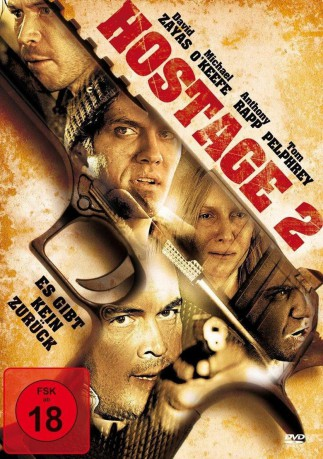

#7673 Hostage 2 - Es gibt kein zurück
 
 IMDB-Wertung: 5.7 / 10
IMDB-Wertung: 5.7 / 10  Metascore: 0
Metascore: 0 
Ein Quartett von Junkies würde gerne Drogen erstehen, doch mangelt es am nötigen Kleingeld. Der Dealer würde seiner Mutter gerne einen neuen Fernseher zum Geburtstag spendieren und schickt die schmutzigen Vier los, einen solchen zu stehlen. Der Weg führt die Loser in ein reiches Villenviertel zu einem frisch bezogenen Heim, wo auch tatsächlich ein schöner Flatscreen ihrer harrt. Doch versteckt sich noch weitaus Brisanteres in dem Haus, und das führt nach der Heimkehr der dort lebenden Familie zu übelstem Gerangel.
Jahr: 2012
Dauer: 91 Minuten
FSK: 18
Land: USA Studio: Grand Entertainment GroupTonspuren: DTS - ,
Untertitel:
Auflösung: 1080p (1920x816) Größe: 4997 MB
Genre: Thriller
Regisseur: Tony Glazer
Drehbuch: Tony Glazer
Soundtrack:
Darsteller:
 David Zayas als Lt. Tarelli
David Zayas als Lt. Tarelli Michael O'Keefe als Walters
Michael O'Keefe als Walters Anthony Rapp als Connor
Anthony Rapp als Connor Anthony Ruivivar als Tai
Anthony Ruivivar als Tai- Neal Bledsoe als Donald
- Summer Crockett Moore als Kari
- Tom Pelphrey als David
- Harris Doran als Spot
- Sharon Lesser als Jennifer
- Danielle Kotch als Mia
- Joanna Bayless als Mrs. Pendelson
- Laurence Blum als Patrol Officer Laurant
- Bryan Deehring als Martin Bateman
- Pat Patterson als Patrice
- Derek Roché als Thomas
- Yvonne Jung als Reporter Wood
- Kaipo Schwab als Reporter
- Maria Arcé als Swat Team #2
- Justin Barnette als Media Cameraman
- Hannah D. Scott als Reporter
- Adam Shiri als Media Person
- Jason Yudoff als Central Station Dispatch
- Bud Stafford als Police Officer
- Cynthia Shaw als Police Officer
- David Rossetti als Reporter #3
- Peter Aguero als Thug
- Matt De Matt als Ross
- James Adames als Police officer
- Amanda Boekelheide als Police Officer
- Emily Best als Answering Machine
- Katie Apicella als Plain Clothed Cop
- Ken Nicolson als Police Officer
Datei: X:\2-Dilogie(G-M)\Hostage\Hostage 2 - Es gibt kein zurück (2012, FSK18, 1920x816).mkv seit 30.11.2017
Festplatte: HD Collection-2(A-Z)-3(A-M)
 Alle Filme aus Gruppe '2-Dilogie(G-M)\Hostage'
Alle Filme aus Gruppe '2-Dilogie(G-M)\Hostage'